Thirteen short drone video clips, almost no ground truth — how do you build and validate an object detection system anyway?
Mehmet Recep AşkarComputer Vision Engineer
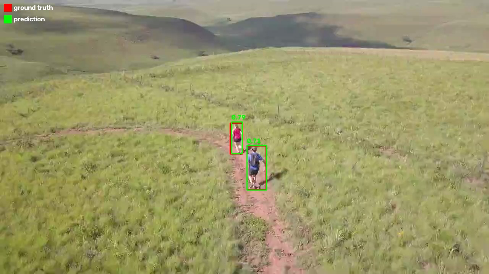
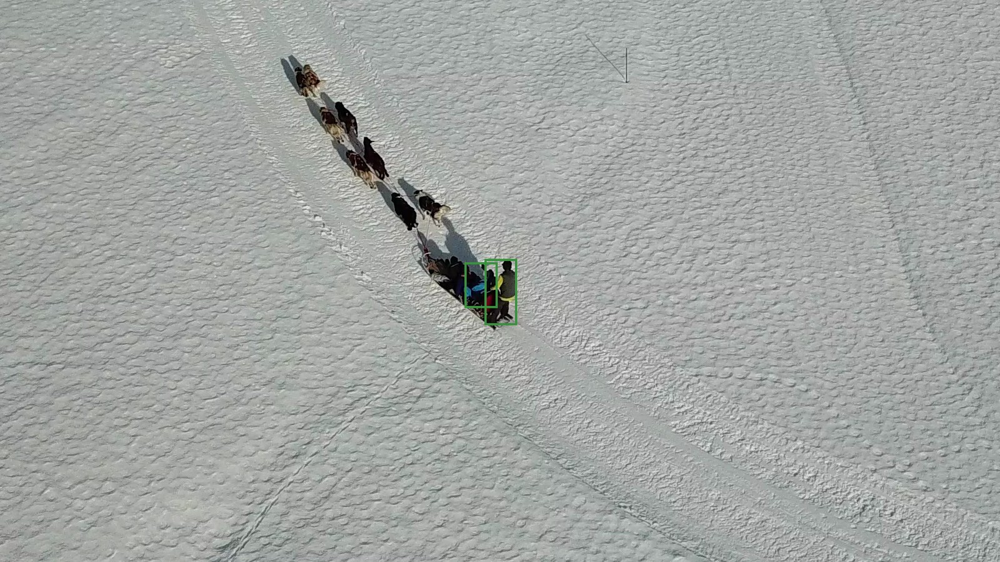
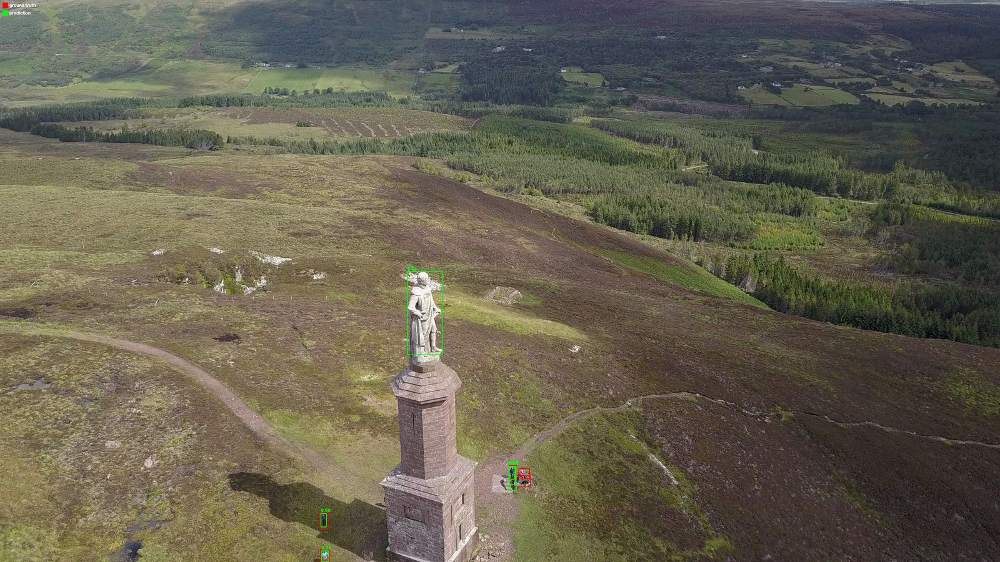
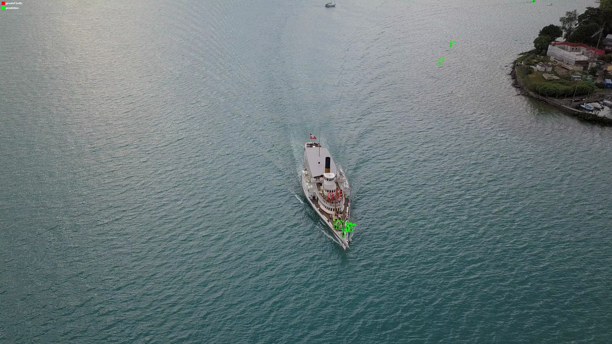
02 / 22Motivation
Problem Definition & Real-World Motivation
This isn't an object-detection problem — it's object detection under label scarcity. That constraint is the actual, recurring situation in the field, not an artificial one.
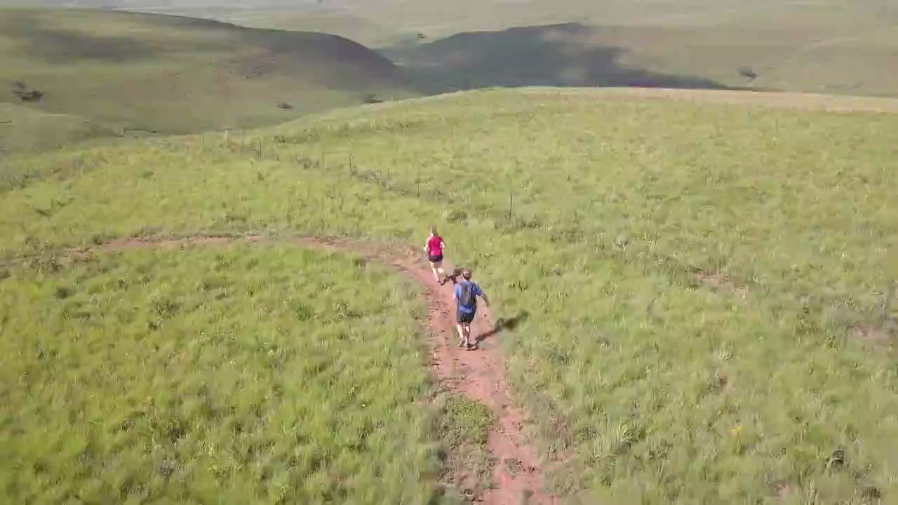
AThe assignment
Detect and localize one class in drone video
13 short videos. Little data, no ground truth at all.
Full manual labelling out of scope
Real question: build and validate without labels?
BWhy this matters in practice
Surveillance networks: hundreds of cameras, thousands of detections
A new product on the line → a class no model was trained on
Industry 5.0: product counting, safety, quality inspection
Data never arrives labelled; hardware budget is limited
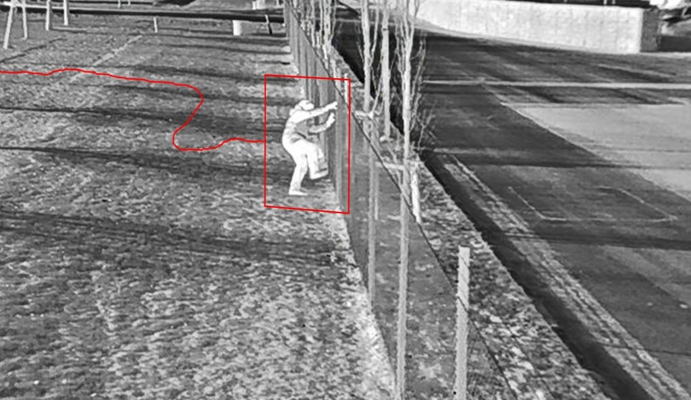
Thermal camera flags a fence intrusion, tracks its path.
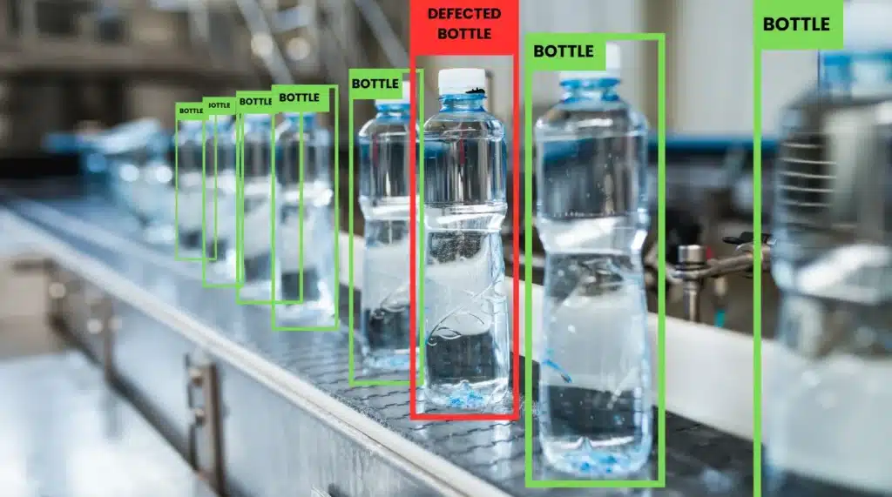
Bottling-line QC — one defective unit flagged.
03 / 22Target & Data
Target Selection
We didn't pick the target blindly — we tested every candidate against explicit criteria, recorded what got eliminated and why, and person won on all four.
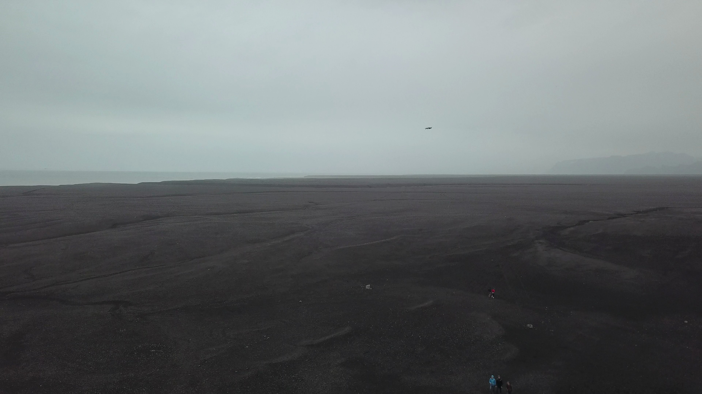
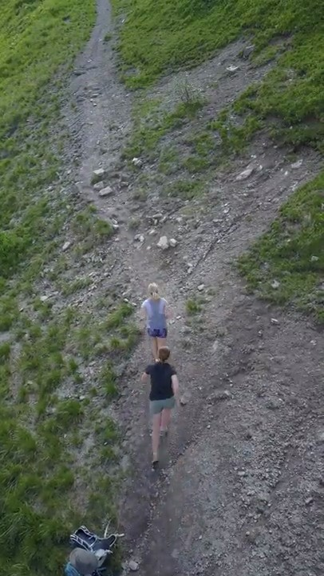
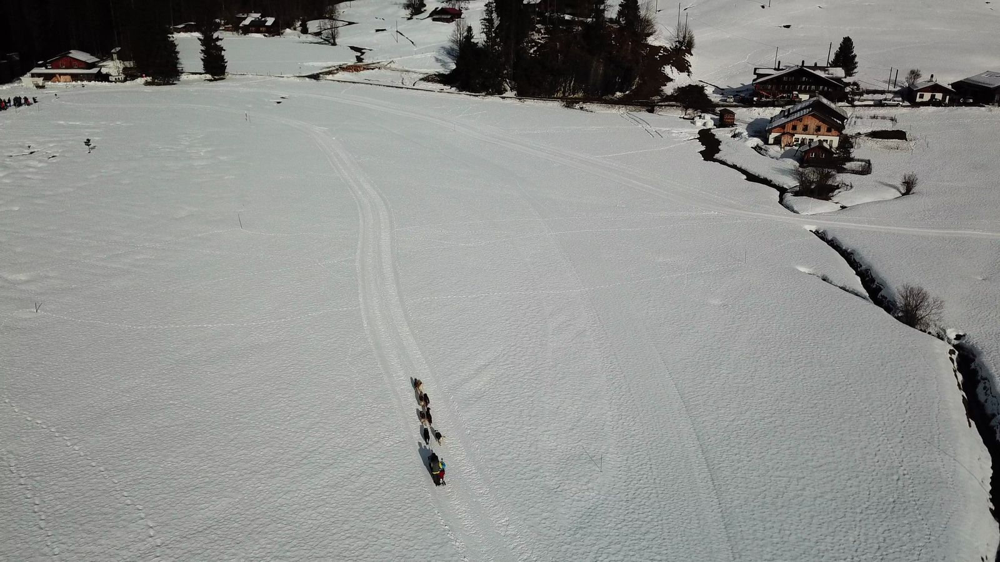
ASystematic dataset inventory
13 videos read one by one before choosing anything
Recorded per video: duration, objects present, object size, background, occlusion
Full table lives in the repo — summary here
BSelection criteria, checked against every candidate
Needed: ≥2-3 videos, real scale variation, ~500+ instances, genuine occlusion material
person: 11 of 13 videos — a full manual re-watch corrected an initial 6/13 sparse-frame estimate
Why staying inside COCO's vocabulary matters:person is already a COCO class, so the baseline method (Slide 7) measures a genuine domain gap — unusual angle, small scale, low resolution — not an unfamiliar class.
04 / 22Data Preparation
Data Preparation: Splitting Strategy
Split at the video level, never the frame level — and every split deliberately spans different domains. That's what makes the later numbers mean something.
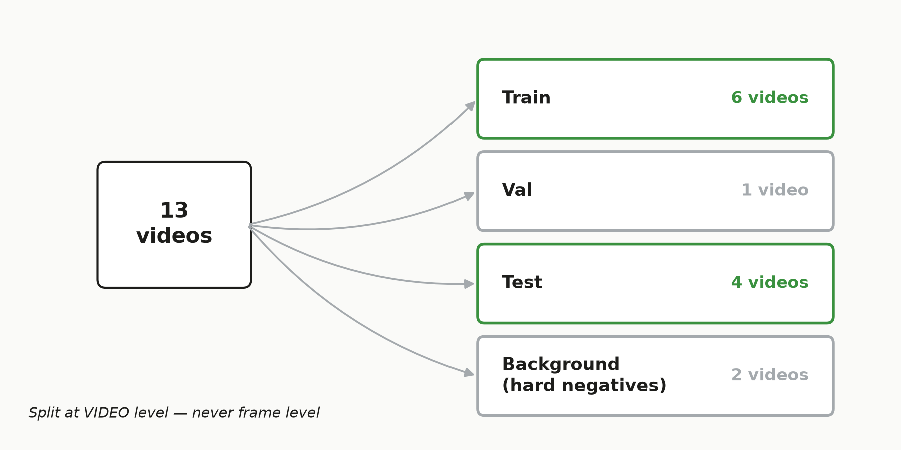
13videos, 7m52s total
11/13contain the target
4/6/1test/train/val videos
2background (person-free)
ASplit at video level — not frame level
Frames within one video are near-duplicates, one domain
Frame-level split → leaks test domain into training → inflated scores
Train / Val / Test: 6 / 1 / 4 videos (of 11 person-containing), plus 2 background videos held out separately
BWhy each split was sized that way
Test: enough videos to evaluate in a genuinely general context
Train: enough videos to avoid one narrow domain
Val: threshold tuning and model selection only, never in final numbers
CDeliberate domain diversity
Test spans 4 different domains — grass trail, hilltop monument, ship deck, volcanic terrain
No split leans on near-duplicate footage of one scene
05 / 22The Test Set
The Test Set: Labelled by Hand
The test set is the most valuable asset in this project — every number in this talk depends on it, so it was labelled entirely by hand.
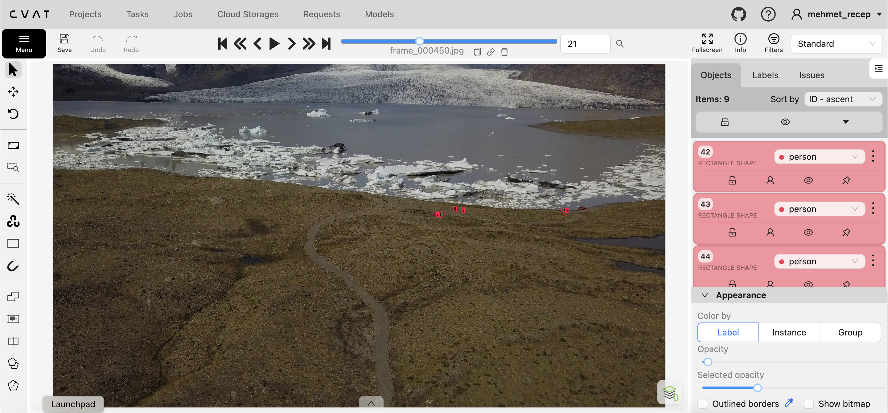
CVAT, mid-annotation: small, distant people on a glacial lagoon scene, boxed by hand.
AManually labelled, on purpose
Test labels drawn by hand in CVAT — no model output ever enters ground truth
The human labelling budget was spent on measurement, not training
Without a trustworthy test set, no other number in this talk means anything
Honest limitation: with only 4 held-out videos, this test set is small. Generalisation claims are bounded accordingly — and stated again when the results come in.
06 / 22Automatic Labelling
Automatic Labelling with SAM 3
SAM 3 — Segment Anything with Concepts, Meta AI, 2025
A–BWhy automatic, and the pipeline
Manual labelling doesn't scale to the training set
confidence_threshold=0.5 — see the shadow fix below
CValidated against ground truth first
Run on the manually labelled test videos too, compared to our own CVAT boxes — only then trusted for training
Agreement: mAP@.5 = 0.846 vs. gold test set (Slide 13)
Inference: 2.72s/frame mean on T4 (≈0.37 FPS) — from the zero-shot benchmark under matching settings, not logged separately during the labelling run itself
471 frames, 1,411 boxes produced (train+val, post quality filtering)
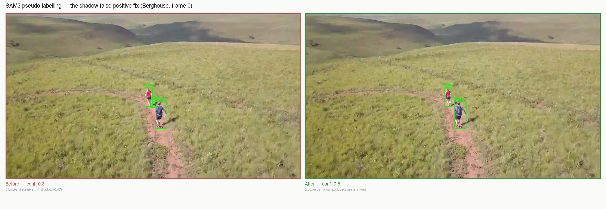
Failure caught and fixed: a runner's shadow scored 0.47 and got boxed as a person. Threshold raised 0.3→0.4→0.5 to exclude it — deliberately, accepting some risk to genuine hard/small instances elsewhere.
A different video, same discipline: DJI_0790's sled team — 6-8 dogs correctly excluded, only the musher and passenger boxed as person. The dogs were SAM3's other failure mode (Slide 9).
07 / 22Baseline Method
Baseline Approach: YOLO26n, Zero Fine-Tuning
Before training anything: measure the raw domain gap. This baseline exposes one structural failure everything after it responds to.
Setup
COCO-pretrained — already knows "person", zero fine-tuning on our data
imgsz=1920, not 640 — aerial people are tiny, 640 would erase them
Nano, not s/m/l — 1920 already multiplies compute per image; smallest checkpoint keeps FPS up
Confidence threshold at Ultralytics' default (0.25), untouched
0.693mAP@.5
0.479mAP@[.5:.95]
0.784F1 @ 0.25
7.3FPS on T4
0.853Precision @ 0.25
0.726Recall @ 0.25
0.676mAP, large (>96px)
0.018mAP, small (<32px)
Success — two runners, boxed tightly at high confidence.
Threshold trades recall for precision (low conf → more recall, less precision) — that's why lowering it is worth trying (Slide 8).
Failure — tiny distant people on a ship's deck, zero predictions anywhere.
0 of 44 small/distant people caught at YOLO's default confidence (0.25) — but 26 of 44 do get a low-confidence candidate box, just not confident enough to survive the default cutoff.
08 / 22Alternative Method 1 — Cascade · Part 1
Cascade: Architecture & Confidence Selection
Method 1's blind spot motivates a two-stage system — but lowering YOLO's confidence floor alone floods precision with noise, which is exactly why a second, independent model sits downstream of it.
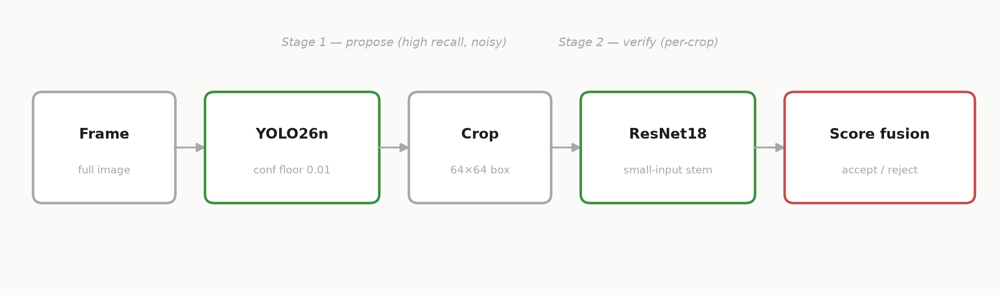
A–BThe gap, and the two-stage answer
The gap this closes: Method 1 alone, at its default confidence (Slide 7), finds 0 of 44 small/distant people
Stage 1: same YOLO26n, confidence floor 0.25→0.01
Stage 2: ResNet18 binary classifier on a 64×64 crop, not the whole frame (training recipe: Slide 9)
Confidence
Candidates/frame
Recall
0.01
6.09
80.4%
0.05
2.02
62.6%
0.10
1.28
47.7%
0.15
0.96
41.1%
0.20
0.74
35.5%
0.25 (default)
0.56
27.1%
0.30
0.52
25.2%
CChoosing the floor — measured, not guessed
Swept YOLO's own confidence threshold on val, checked candidates against SAM3 pseudo-labels (IoU≥0.5)
0.25→0.01: recall triples (27.1%→80.4%) but candidates/frame grow >10× (0.56→6.09) — most of that growth is noise, not new true positives
0.01 sits at the recall ceiling; agreed fallback to 0.05 if the verifier underperformed (it didn't — Slide 11)
09 / 22Alternative Method 1 — Cascade · Part 2
Cascade: Training the Verifier
How the second stage's training data and recipe were built — including the most interesting failure this project surfaced.
AHow the training data was built
Positive crops: YOLO candidates overlapping a SAM3 person box at IoU≥0.5. Negative: YOLO's own false positives (IoU=0) + background-video crops. Ambiguous zone (0<IoU<0.5): discarded
Audit found SAM3 boxing sled dogs as "person" on the snow video — 271 boxes manually corrected to not_person, feeding the verifier the exact confusion that broke the teacher
Final: train 4,905 (1,398 person / 3,507 not_person) — val 221 (181 / 40)
Input 64×64 crops (40% context padding) · Adam optimizer
15 epochs, batch 64
Augmentation — flip + colour jitter
98.9%Val person F1 (best epoch)
98.2%Val accuracy
15Epochs
64Batch size
10 / 22Alternative Method 1 — Cascade · Part 3
Cascade: The Iteration
The first version made things worse, not better. Three measured refinements — each kept or discarded on evidence — got it past the baseline.
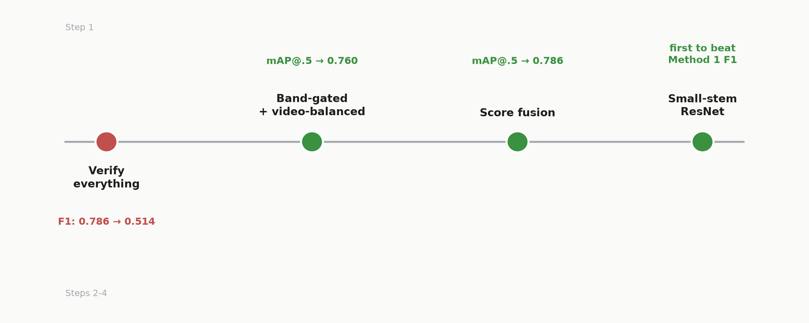
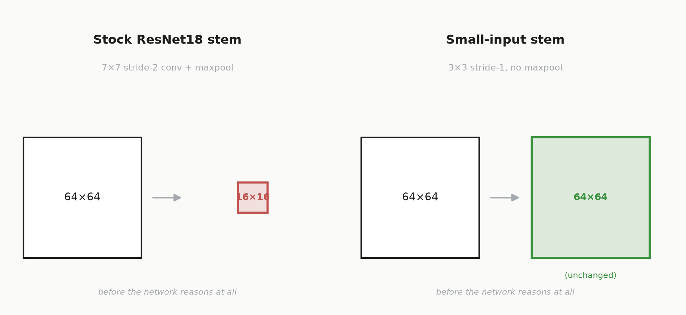
Verify all boxes → F1 collapses 0.786→0.514: the verifier wrongly rejects boxes Method 1 already had right
Band-gate + video-balance → only the ambiguous [0.01, 0.25) band goes through the verifier; one video was ~75% of training crops, fixed by equal per-video weighting. mAP@.5 recovers to 0.760
Score fusion → sqrt(yolo_conf × verifier_prob), mAP@.5 → 0.786, biggest single jump this cycle
Small-input stem — stock ResNet18 downsamples 64×64 crops to 16×16 before reasoning even starts; swapped for the original ResNet paper's own small-input design (He et al. 2016, §4.2), a 3×3 stem with no maxpool that keeps full resolution
11 / 22Alternative Method 1 — Cascade · Part 4
Cascade: Final Result
A real, measured win: recovers exactly the small-object recall Method 1 couldn't reach at all.
Verifier backbone (shared conf 0.25)
mAP@.5
P
R
F1
FP
Method 1 (YOLO26n)
0.693
0.853
0.726
0.784
90
Cascade — small-stem + fusion
0.786
0.754
0.778
0.766
182
Cascade — EfficientNet-B0 (tried, not adopted)
0.777
0.729
0.765
0.747
204
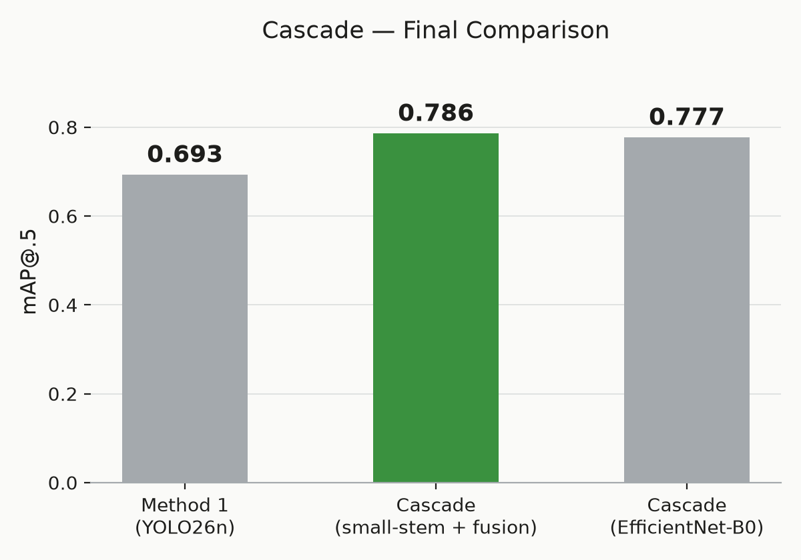
Small-object mAP on the 2 hardest videos: 0.000→0.081/0.070 — a targeted recovery of exactly Method 1's exposed failure
Also tried EfficientNet-B0 as the verifier backbone — not adopted, weaker on the actual test set despite a better validation score
Resolution fragility: forced to YOLO's 1920×1088, RT-DETRv2-R18 collapses 0.740→0.253, FP jumps to 1733 — it has no NMS at inference, its one-query-per-object behaviour is learned for one resolution. YOLO tolerates this fine.
Both RT-DETR checkpoints resist the DJI_0501 statue trap that fools YOLO and SAM3 (Slide 16) — a measured, architecture-specific difference: self-attention reasons over the whole frame, not just local shape.
13 / 22Method 4 — The Alternative
SAM 3, Zero-Shot Foundation Model
SAM 3 — Segment Anything with Concepts, Meta AI, 2025 · the assignment's required genuinely-different alternative
0.846mAP@.5 — highest of any method
0.872Recall @ 0.25 — highest of any method
0.37 FPS≈10× slower than any trained detector
Zero training, zero fine-tuning on this project's data — the same model that labelled the training set (Slide 6), now benchmarked under the identical protocol as every other method.
14 / 22Comparison
Quantitative Comparison
One test set, one protocol, four paradigms — ranked by mAP, not a fixed confidence threshold, because these methods aren't on the same confidence scale.
Method
HW
mAP@.5
mAP@[.5:.95]
P
R
F1
FPS
YOLO26n
T4
0.693
0.479
0.853
0.726
0.784
—
Cascade (small-stem fusion)
T4
0.786
0.526
0.754
0.777
0.7662
—
RT-DETRv2-R18
CPU1
0.740
0.468
0.609
0.761
0.677
—
SAM3 (zero-shot)
T4
0.846
0.626
0.485
0.872
0.624
0.37
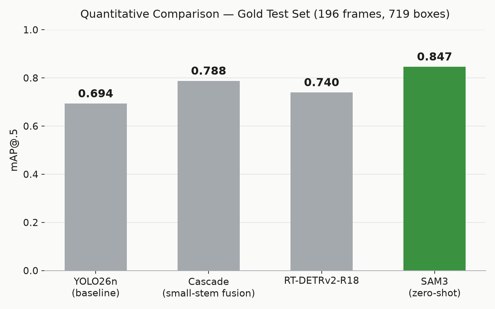
1 RT-DETR's script runs on GPU automatically when available; not yet re-run on T4 this cycle — stated, not hidden.
2 At conf=0.25 for table consistency (comparison.csv, nothing hand-typed) — not the cascade's own best-F1 point (0.38): that number comes from scanning thresholds against this same test set, a form of leakage. Checked directly: the identical scan puts Method 1 at F1 0.7892 @ 0.30 — higher. Neither swept number is trustworthy; mAP is, which is why it carries this claim.
COCO protocol via pycocotools. Size-based and per-video breakdowns built in from day one — a single pooled number would have hidden this project's central finding entirely (Slide 7).
15 / 22Comparison
Qualitative Comparison
One frame can show a success, a miss, and a false positive at the same time — numbers alone don't tell you that.
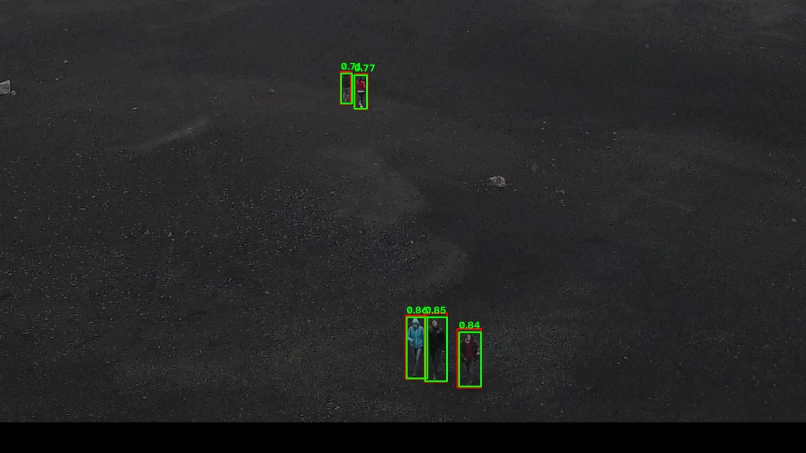
Clean success — five people on volcanic terrain, correctly boxed at high confidence by SAM3 (0.70-0.86). DJI_0862 scores 0.906 mAP@.5, SAM3's second-best test video.
All three outcomes at once — correct cluster on the rear deck, two people missed near the wheelhouse, 2-3 false positives over open water (plausibly wave glare read as a distant person).
16 / 22Ambiguous Results
Is It Even a Person?
Some of the hardest cases aren't detection failures — they're genuine disagreements about what "person" even means, and different architectures answer differently.
A stone monument on a Scottish hilltop — human-shaped, human-posed, not alive. Ground truth correctly excludes it. Measured across all 10 sampled frames, not eyeballed:
Method
Boxed as person
Confidence range
YOLO26n
8 / 10 frames
0.81 – 0.89
SAM3 (zero-shot)
7 / 10 frames
0.58 – 0.71
RT-DETR-l
2 / 10 frames
0.27 – 0.73
RT-DETRv2-R18
1 / 10 frames
0.31 (below op. threshold)
None of these four checkpoints were ever trained on this project's data — every one meets this object zero-shot. Both RT-DETR checkpoints are markedly more resistant.
17 / 22Error Analysis
Error Analysis
Difficulty tracks the footage, not the detector — every method's own best-to-worst video ranking is nearly identical.
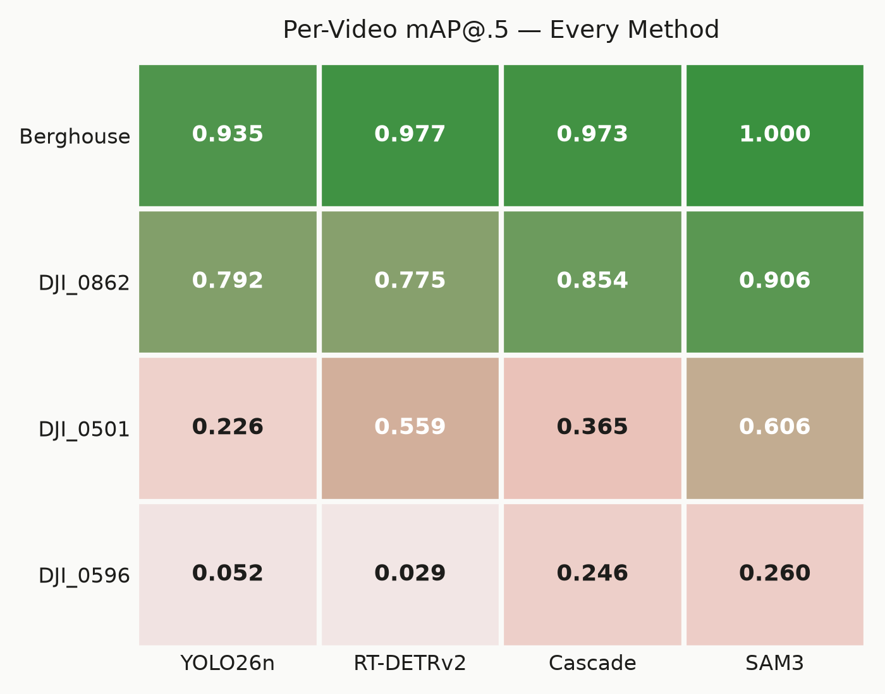
Small
Medium
Large
YOLO26n
0.018
0.472
0.676
RT-DETRv2
0.000
0.418
0.743
Cascade
0.073
0.523
0.689
SAM3
0.070
0.669
0.773
Small objects: the dominant failure mode for every method, without exception.
18 / 22Trade-offs
Strengths, Weaknesses, and Cost
No method wins on every axis — the real choice is which trade-off fits the deployment.
Method
Strengths
Weaknesses
YOLO26n
Fastest, simplest, zero training cost, best precision of any method tried
Structurally blind to small/distant people
Cascade
Only method recovering small-object recall from zero; best mAP among trained, deployable methods
Two-stage cost; verifier is data-hungry
RT-DETR
Genuinely different architecture; competitive ranking; resistant to the statue trap
More false positives; resolution-fragile; not fine-tuned this cycle
SAM3
Best accuracy and recall, zero training
~10× slower than any trained detector; ideal as teacher/auditor, not deployment
Verifier backbone: ResNet18 11.2M params vs. EfficientNet-B0 4.0M — fewer params ≠ faster on CPU, EfficientNet ran ~5× slower per crop (depthwise-separable convs vectorize poorly on CPU). SAM3: 0.37 FPS on T4, the only committed speed number so far — YOLO/cascade/RT-DETR end-to-end FPS on T4 not yet benchmarked (Slide 20).
19 / 22Production System
Proposed Production System
Don't deploy one method — combine the fast one and the accurate one, each doing the job it's actually good at.
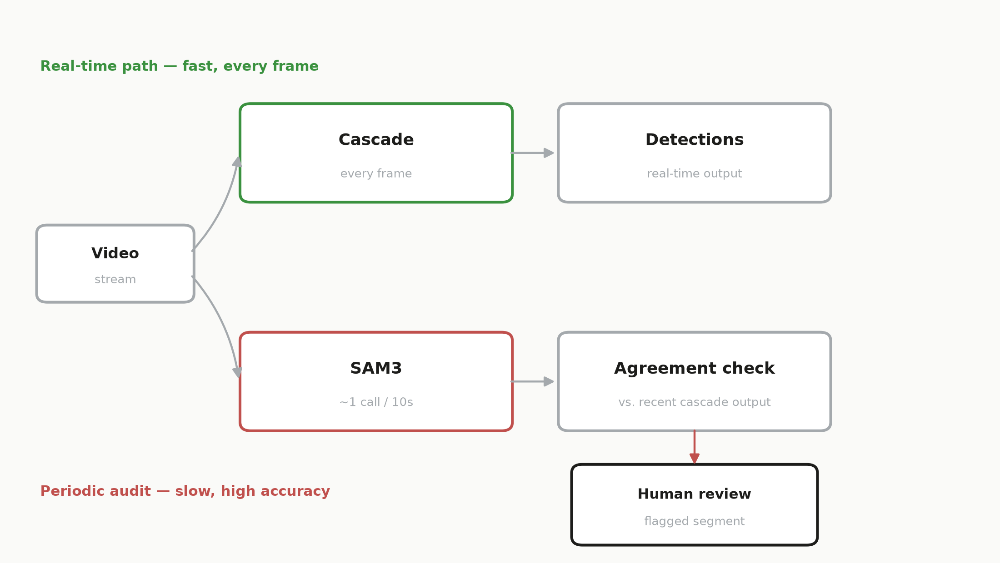
Real-time path: cascade, every frame — fast, best mAP among trained methods
Periodic audit: SAM3, ~1 call/10s — far too slow per-frame, but highest accuracy available
If SAM3's reading disagrees sharply with the cascade's recent output, flag the segment for human review
Mirrors exactly how both models are already used: SAM3 as teacher (Slide 6), cascade as deployed student (Slides 8-11)
20 / 22Limitations
Honest Limitations & Future Work
What didn't get done this cycle, and why, stated plainly.
Already surfaced in this talk
Small-object detection: dominant failure mode for every method, none solve it fully
End-to-end FPS for YOLO/cascade/RT-DETR on T4: not yet benchmarked
Test set: 4 videos — enough for per-condition breakdown, a small statistical sample
Time-boxed out, not forgotten
Fine-tuning YOLO26n on our own pseudo-labels — highest-priority item still open
RT-DETR fine-tuning — transformers are more data-hungry, judged too risky this cycle
ConvNeXt+CenterNet+FPN; TensorRT/FP16 export; YOLO P2 head + SAHI tiling
Explicitly future work
Synthetic data (Blender domain randomization, optionally Gaussian splatting)
INT8 quantization for edge deployment
21 / 22Closing
Closing
A simple baseline exposed one specific, real failure. Three genuinely different responses to it — a verifier cascade, a transformer architecture, a zero-shot foundation model — each traded accuracy against speed, precision against recall, in a different place.
4detection paradigms, one gold test set
34logged, dated experiment configs
0.693→0.846mAP@.5 range across methods
0mislabels in the full manual crop audit
Every table in this talk traces back to a file in results/. Every step ran in the Colab notebooks in the repository, end-to-end from the README.
github.com/Kametor/ object-detection-drone
22 / 22References
References
Models
Ren, S. et al. RT-DETR: DETRs Beat YOLOs on Real-Time Object Detection. CVPR 2024.
Lv, W. et al. RT-DETRv2: Improved Baseline with Bag-of-Freebies. 2024.
Meta AI. SAM 3: Segment Anything with Concepts. 2025.
Redmon, J. et al. You Only Look Once (YOLO). CVPR 2016.
Jocher, G. et al. Ultralytics YOLO (YOLO26). 2024-2025.
He, K. et al. Deep Residual Learning for Image Recognition (ResNet). CVPR 2016.
Tan, M. & Le, Q. EfficientNet: Rethinking Model Scaling. ICML 2019.
Datasets
Kaggle kmader/drone-videos — DJI Mavic Pro drone footage.
Evaluation
Lin, T.-Y. et al. Microsoft COCO: Common Objects in Context. ECCV 2014.